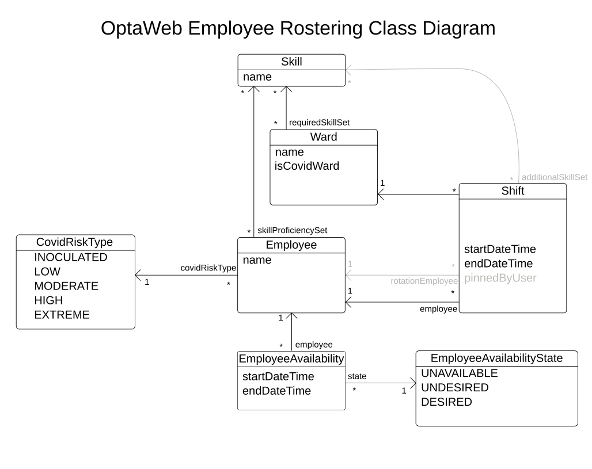
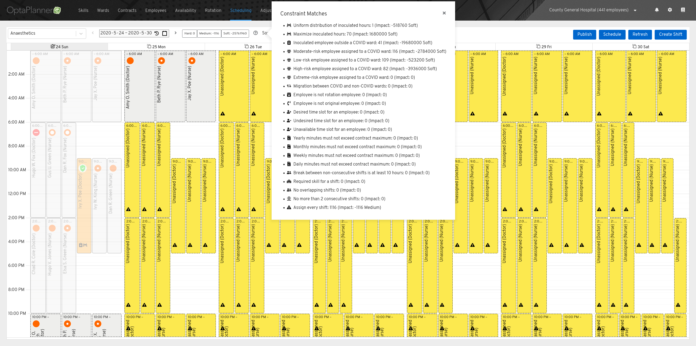
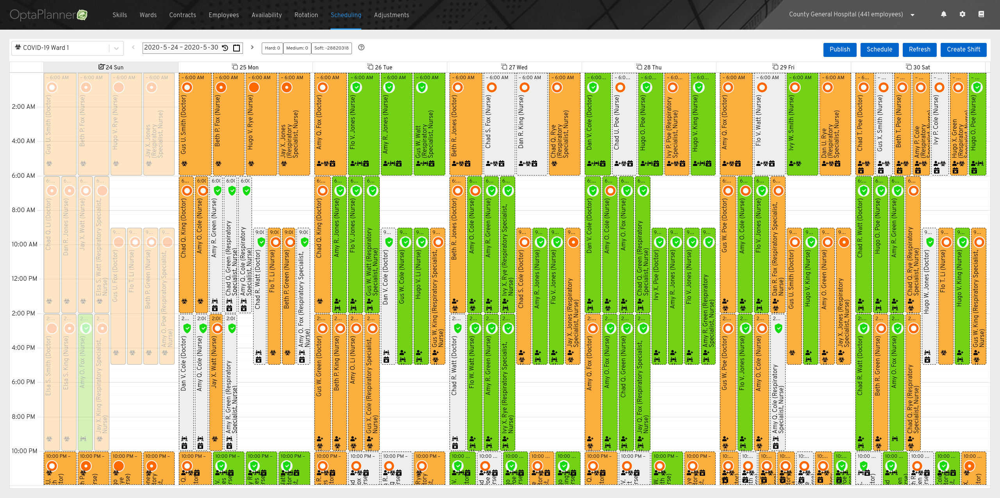
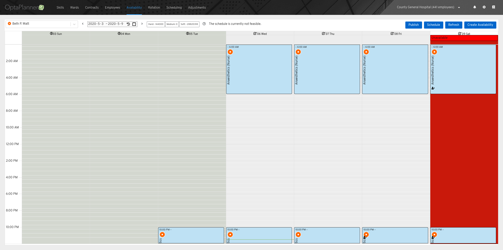
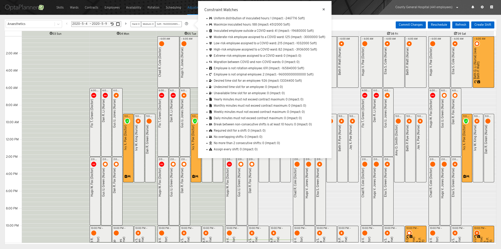

AI versus Covid-19: How Java helps nurses and doctors in this fight
Scheduling a hospital is tough. To maintain employees’ happiness and health,
you need to take into account sick days, days off requests, and assure
the employees have ample time between shifts. This is doubly so in a pandemic,
where you need to minimize exposure to the new disease and have nurses with
varying susceptibilities to the disease. Let’s take a look at how we can quickly and efficiently
schedule a hospital roster that minimizes cross-contamination between wards
and maximizes employees’ happiness using OptaWeb Employee Rostering.
you need to take into account sick days, days off requests, and assure
the employees have ample time between shifts. This is doubly so in a pandemic,
where you need to minimize exposure to the new disease and have nurses with
varying susceptibilities to the disease. Let’s take a look at how we can quickly and efficiently
schedule a hospital roster that minimizes cross-contamination between wards
and maximizes employees’ happiness using OptaWeb Employee Rostering.
The domain
First, let’s set out the domain of our model:
- There are wards, which are sections of the hospital, and are separated into
Covid-19 wards and non-Covid-19 wards - There are employees, who are doctors and nurses who can be assigned to a ward,
each having different susceptibilities to Covid-19 (for instance,
some nurses are older and thus are more vulnerable) - There are skills, which describes what skill set an employee must have in
order to work in a particular ward - There are shifts, which are positions that need to be filled at a given ward
at a particular time, and may require additional skills in addition to those of
its ward (for example, we need a repository specialist nurse in a Covid-19
ward, as well as a nurse and a doctor) - Finally, there are availabilities, which describes when an employee is unable to
work, desires to work, or is requesting time off
The following class diagram shows the Java classes that represent this domain:

The constraints
OptaWeb Employee Rostering comes with a set of builtin
constraints, which you can add to, modify or remove according to your needs.
A few examples:
constraints, which you can add to, modify or remove according to your needs.
A few examples:
- An employee cannot work two shifts that overlap; after all, how do you expect an
employee to be in two places at the same time? As such, this is a hard constraint,
meaning a schedule is infeasible if broken. - Whenever possible, an employee should not be working on a day they request off.
Since the schedule remains feasible when an employee is working on a day they want off,
this is a soft constraint. - The higher an employee’s Covid-19 susceptibility is, the less they should
work in a Covid-19 ward. This is another soft constraint.
These, and the rest of the constraints, can be found in the
Drools constraints
file. They can also be implemented in Java using OptaPlanner’s Constraint Streams
API.
Drools constraints
file. They can also be implemented in Java using OptaPlanner’s Constraint Streams
API.
Using the application
You can build and run OptaWeb Employee Rostering locally by cloning
its GitHub repository,
switching to the
OptaWeb Employee Rostering comes with both a backend and frontend. You could use the
bundled frontend or use the backend’s REST endpoints. The application by default
starts with demo data, allowing you to try out the application. Let’s use one of
example tenant and solve its roster. Navigate to the “Scheduling” tab and click
the (?) button next to the score. You will see a detailed summary of all the constraints.
On the bottom of the list, we see the constraint “Assign every shift” has 1116 matches, meaning we have
1116 unassigned shifts. Let’s fix that right now.
its GitHub repository,
switching to the
covid-19 branch, and following the instructions in the README.OptaWeb Employee Rostering comes with both a backend and frontend. You could use the
bundled frontend or use the backend’s REST endpoints. The application by default
starts with demo data, allowing you to try out the application. Let’s use one of
example tenant and solve its roster. Navigate to the “Scheduling” tab and click
the (?) button next to the score. You will see a detailed summary of all the constraints.
On the bottom of the list, we see the constraint “Assign every shift” has 1116 matches, meaning we have
1116 unassigned shifts. Let’s fix that right now.

Close the summary popup and click on the “Schedule” button. OptaPlanner will begin solving
the roster. After about 30 seconds, you’ll see there are no more unassigned shifts — that is, OptaPlanner assigned an employee to each of the 1116 shifts, all the while
making sure no employee gets two shifts at the same time, each employee has the required
skills for their shift, and each employee has enough rest between shifts. Imagine
making a feasible schedule by assigning 1116 shifts by hand; it would take a good
while longer than 30 seconds!
the roster. After about 30 seconds, you’ll see there are no more unassigned shifts — that is, OptaPlanner assigned an employee to each of the 1116 shifts, all the while
making sure no employee gets two shifts at the same time, each employee has the required
skills for their shift, and each employee has enough rest between shifts. Imagine
making a feasible schedule by assigning 1116 shifts by hand; it would take a good
while longer than 30 seconds!
While solving, OptaPlanner will keep looking for better solutions, gradually improving
the score. You might have already seen the schedule change several times already.
Let’s stop solving for now. Click the Ward selector (left side of the toolbar) and
change to the ward “COVID-19 Ward 1”. Every shift has a small circle at the top of
it denoting the Covid-19 susceptibility of its employee. A shield represents
inoculated employees; people who have acquired immunity to Covid-19. A near-empty
circle means the employee has a low Covid-19 susceptibility, while a more filled in
circle means a higher Covid-19 susceptibility. Finally, a red circle means the employee
is extremely susceptible to Covid-19, and should not be placed in a ward with Covid-19.
Notice how there are no Extreme risk employees in the Covid-19 ward? Moreover, most
of the Covid-19’s ward shifts either have inoculated or low-risk employees.
the score. You might have already seen the schedule change several times already.
Let’s stop solving for now. Click the Ward selector (left side of the toolbar) and
change to the ward “COVID-19 Ward 1”. Every shift has a small circle at the top of
it denoting the Covid-19 susceptibility of its employee. A shield represents
inoculated employees; people who have acquired immunity to Covid-19. A near-empty
circle means the employee has a low Covid-19 susceptibility, while a more filled in
circle means a higher Covid-19 susceptibility. Finally, a red circle means the employee
is extremely susceptible to Covid-19, and should not be placed in a ward with Covid-19.
Notice how there are no Extreme risk employees in the Covid-19 ward? Moreover, most
of the Covid-19’s ward shifts either have inoculated or low-risk employees.

One second, I am getting a call. Okay, I’m back. Beth P. Watt caught the flu and
as such is not able to make her shift this Saturday. Luckily for us, OptaPlanner
can handle sudden changes well. Go to the “Availability” tab. Click the Employee
selector (left side of the toolbar) and type in “Beth P. Watt”. Click the Clock
icon on the week selector to jump to the current week. Now click the area under
the Saturday label on the calendar. This creates a new unavailability for the
employee Beth P. Watt on Saturday.
as such is not able to make her shift this Saturday. Luckily for us, OptaPlanner
can handle sudden changes well. Go to the “Availability” tab. Click the Employee
selector (left side of the toolbar) and type in “Beth P. Watt”. Click the Clock
icon on the week selector to jump to the current week. Now click the area under
the Saturday label on the calendar. This creates a new unavailability for the
employee Beth P. Watt on Saturday.

You should now see a message indicating the schedule is not feasible in the
toolbar. This is because Beth P. Watt is unavailable on Saturday but is
assigned to a shift on Saturday. Let’s fix that. Navigate to the “Adjustments”
tab, and click “Reschedule”. You should notice OptaPlanner quickly fixed the
schedule by assigning Beth P. Watt’s two shifts to another employee. Also, note
that OptaPlanner changed only those two shifts; OptaPlanner will try to minimize
the number of published shifts changed (after all, nurses and doctors have a
life, which they plan around their schedules).
toolbar. This is because Beth P. Watt is unavailable on Saturday but is
assigned to a shift on Saturday. Let’s fix that. Navigate to the “Adjustments”
tab, and click “Reschedule”. You should notice OptaPlanner quickly fixed the
schedule by assigning Beth P. Watt’s two shifts to another employee. Also, note
that OptaPlanner changed only those two shifts; OptaPlanner will try to minimize
the number of published shifts changed (after all, nurses and doctors have a
life, which they plan around their schedules).

A few other things you can do with this application:
- You can “pin” an employee to a particular shift, meaning OptaPlanner
will not change that shift’s employee when solving. - You can create a rotation for the employees, giving them more consistency
in their day to day lives and allowing automatic provisioning of new shifts.
Conclusion
As you just saw, OptaWeb Employee Rostering allows you to easily create
and optimize rosters, that does not only minimize Covid-19’s effect on
health care workers, but also maximizes their happiness. You can find the
source code of this application at
the OptaWeb Employee Rostering GitHub repository. This was only
possible as OptaPlanner has such a flexible and easy way to add new constraints,
allowing us to quickly modify OptaWeb Employee Rostering to accommodate
the new constraints that came with Covid-19. You might also be interested
in Geoffrey De Smet’s talk on the application.
and optimize rosters, that does not only minimize Covid-19’s effect on
health care workers, but also maximizes their happiness. You can find the
source code of this application at
the OptaWeb Employee Rostering GitHub repository. This was only
possible as OptaPlanner has such a flexible and easy way to add new constraints,
allowing us to quickly modify OptaWeb Employee Rostering to accommodate
the new constraints that came with Covid-19. You might also be interested
in Geoffrey De Smet’s talk on the application.

This post was original published on here.